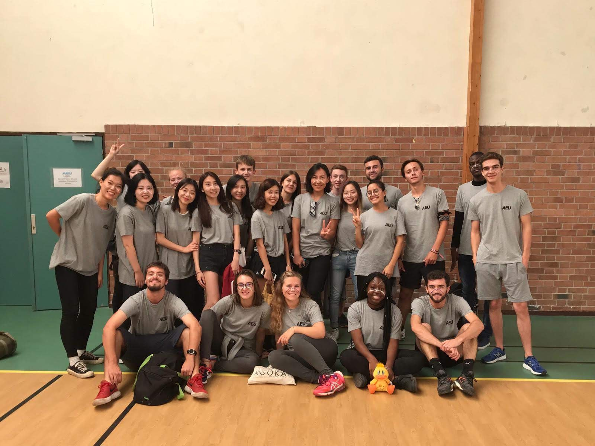
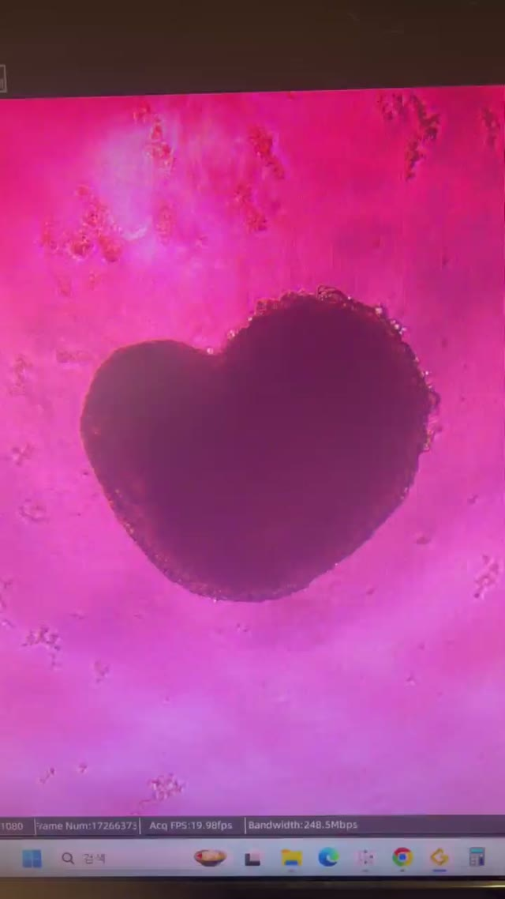

The journal · Young Hyun Kim
Off the Bench.
Places I've been, things I've made,
and moments from life in the lab.
 Robotics & STEAM
Robotics & STEAM
Making
Things I've made.
Paper carousels, wooden robot cars, and ideas brought to life with circuits.
Explore the projects
France · 2019
Travel
A semester in France.
A new place, and the people who made it memorable.

Video gallery
Under the Scope
A closer look.
Organoids in motion, captured at the bench.
Notes to share · For students
Research Starter Kit
Practical notes I wish I'd had on my first day in the lab.
Open the notebook